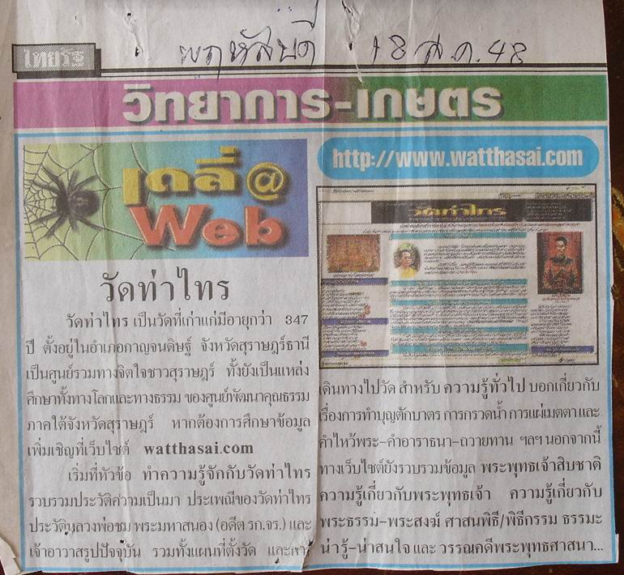

|

ตามที่ นสพ.ไทยรัฐ
ฉบับวันที่ 18 ส.ค. 2548 ได้ให้เกียรติแก่วัดท่าไทรของเรา
โดยการแนะนำให้คนรู้จักเว็บไซต์ของเรา ในคอลัมน์ เดลี่เว็บ ดังภาพที่แนบ
ขณะเดียวกัน คุณ วิเชียร ชาวตะก้อง (ทิดเหนียน) แห่ง วิทยุชุมชน อ.เลาขวัญ
จ.กาญจนบุรี FM 102.75 MHz.
เมื่อพบและอ่านเจอ ได้ตัดข้อมูลดังกล่าวส่งไปให้ webmaster เพื่อทราบ
จึงขออนุโมทนาและขอบคุณใหกุศลเจตนาของ นสพ.ไทยรัฐ และ คุณวิเชียร ชาวตะก้อง
(ทิดเหนียน) ไว้ ณ
ที่นี้ด้วย
|